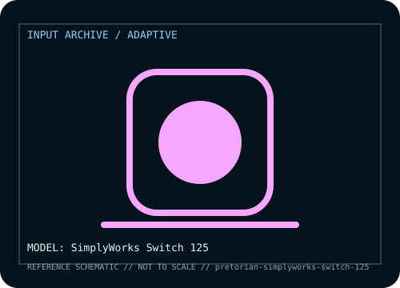

[ ADAPTIVE AND SWITCH-ACCESS CONTROLS // IDENTIFIED COMPONENT ]
Pretorian SimplyWorks Switch 125
Large wireless pressure switch for compatible switch-access receivers.

MODEL IDENTIFICATION: Manufacturer model / identifier: SimplyWorks Switch 125. Compare the unit label, regional suffix, and revision against manufacturer documentation before repair or compatibility claims.
Model specifications
| Catalog subcategory | Adaptive and switch-access controls |
|---|---|
| Exact model / ID | SimplyWorks Switch 125 |
| Model-specific features | 125 mm activation surface and wireless transmission; feedback/battery details follow revision. |
| Interface and host support | Proprietary SimplyWorks receiver link; not direct Bluetooth or USB keyboard input. |
| Revision / driver caveat | Distinct from Environ Wireless 125 and wired switches; verify radio family and receiver. |
Preservation and service notes
Check activation force/travel, replace battery per manual and keep paired receiver with switch.
Record the as-found label, accessories, host OS, driver or firmware version, and test method. Separate observed condition from published specifications; family-level claims are not proof of an individual unit's revision.
Manufacturer source
- Pretorian SimplyWorks Switch 125 — manufacturer model pageModel-specific manufacturer reference for identifying specifications, regional SKU, and linked current support documentation.
Manufacturer pages can change or retire. Preserve the applicable manual and note its revision when documenting a physical device.